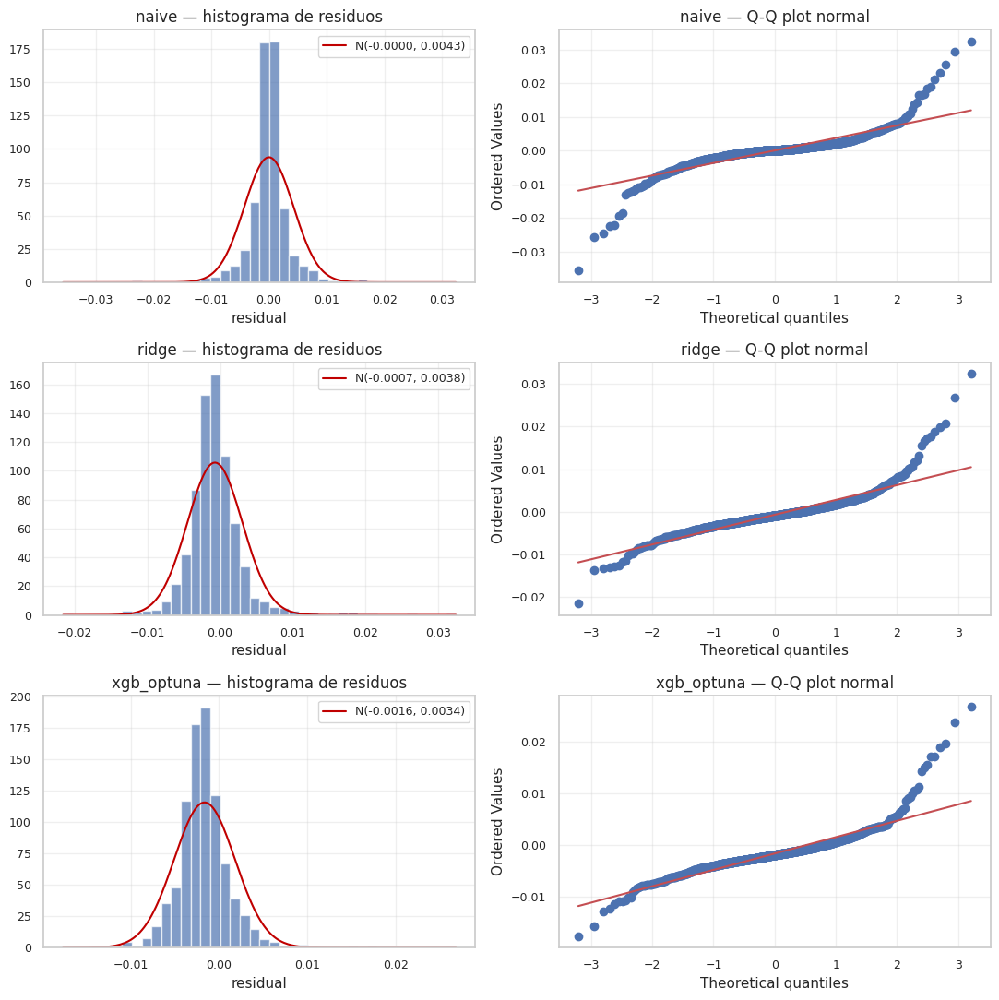
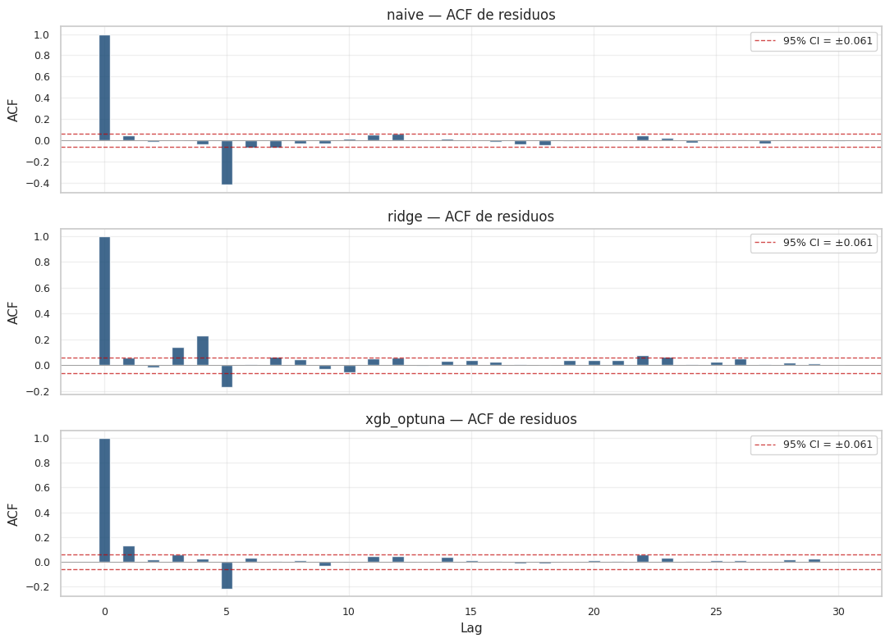
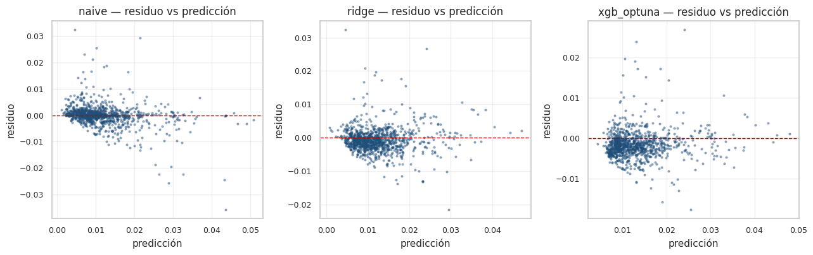

10. Análisis de residuos#
El análisis de residuos es la herramienta clásica para auditar los supuestos de un modelo de regresión. Si los residuos de un modelo bien especificado deberían ser, idealmente:
Centrados en cero (sin sesgo sistemático).
Homocedásticos (varianza constante a lo largo del rango).
Sin autocorrelación serial (independientes entre sí).
Independientes de las variables (sin estructura no lineal residual).
Aproximadamente normales (al menos para inferencia paramétrica).
La rúbrica solicita aplicar cinco pruebas formales: White, BDS, Ljung-Box, Jarque-Bera, e inspección visual de la ACF y del histograma. Lo hacemos sobre los residuos del test de los tres modelos clave:
Modelo |
Justificación |
|---|---|
Naive |
Mejor benchmark econométrico del Cap. 4. Sus «residuos» son la diferencia entre la volatilidad realizada de \(t\) y la de \(t+1\) — útil como referencia mínima. |
Ridge baseline |
Mejor modelo lineal del Cap. 5 (RMSE test 0.00384). Esperamos residuos relativamente «limpios» por la estructura lineal. |
XGBoost optimizado (Optuna) |
Mejor modelo no lineal del Cap. 8 (RMSE test 0.00382). Como captura no-linealidades, debería dejar residuos más aleatorios que un modelo lineal. |
10.1 Cómo leer los p-valores#
Para todas las pruebas, un p-valor bajo (< 0.05) rechaza la hipótesis nula, que en cada caso es:
Test |
H₀ |
|---|---|
White |
Homocedasticidad — varianza constante |
Breusch-Pagan |
Homocedasticidad (versión alternativa) |
BDS |
Independencia (i.i.d.) |
Ljung-Box |
No autocorrelación hasta el lag especificado |
Jarque-Bera |
Normalidad |
En finanzas es muy común rechazar todas las hipótesis nulas: los retornos y la volatilidad presentan clusterización, heteroscedasticidad y colas pesadas. Lo importante en este contexto no es si rechazamos H₀ (probablemente sí), sino comparar relativamente los modelos: si Ridge deja residuos mucho más correlacionados que XGBoost, eso es una señal de mejora del modelo no lineal sobre el lineal.
10.2 Implementación#
Todas las pruebas viven en src/stats_tests.py. Devuelven objetos
TestResult con campos name, statistic, p_value, extra.
La función residual_summary() corre las cinco a la vez sobre
un vector de residuos.
10.3 Setup y carga de predicciones#
import sys
from pathlib import Path
import warnings
import json
import gc
import numpy as np
import pandas as pd
import matplotlib.pyplot as plt
from scipy import stats as sps
PROJECT_ROOT = Path.cwd().parent
sys.path.insert(0, str(PROJECT_ROOT))
from src.config import (
RANDOM_STATE, METRICS_DIR, PREDICTIONS_DIR, MODELS_DIR,
FIGURES_DIR, TABLES_DIR, ensure_dirs,
)
from src.viz import set_style, savefig
from src.io_utils import save_json, load_model
from src.stats_tests import residual_summary, acf_values
ensure_dirs()
set_style()
plt.rcParams["savefig.dpi"] = 150 # reducido para memoria
warnings.filterwarnings("ignore")
np.random.seed(RANDOM_STATE)
# Cargar predicciones de NB 04 y NB 05
preds_bench = pd.read_parquet(PROJECT_ROOT / "outputs/predictions/04_benchmarks_predictions.parquet")
preds_reg = pd.read_parquet(PROJECT_ROOT / "outputs/predictions/05_regression_test.parquet")
# Cargar el modelo XGBoost optimizado por Optuna (NB 08) y predecir
xgb_optuna = load_model(MODELS_DIR / "08_xgb_optuna.joblib")
# Necesitamos los X_test originales para que xgb prediga
te = pd.read_parquet(PROJECT_ROOT / "data/processed/test.parquet")
with open(PROJECT_ROOT / "data/processed/metadata.json") as f:
meta = json.load(f)
feature_cols = meta["feature_columns"]
mask = te["target_regime"].notna() & te["target_vol"].notna()
X_test = te.loc[mask, feature_cols].to_numpy()
y_test = te.loc[mask, "target_vol"].to_numpy()
dates_test = te.loc[mask, "date"].to_numpy()
pred_xgb_optuna = np.maximum(xgb_optuna.predict(X_test), 0.0)
print(f"XGBoost Optuna predicciones generadas: shape {pred_xgb_optuna.shape}")
XGBoost Optuna predicciones generadas: shape (1045,)
# Alinear todas las predicciones con y_test (longitudes mínimas)
# Para naive y ridge usamos las predicciones ya persistidas
pred_naive = preds_bench["naive"].to_numpy()
y_bench = preds_bench["target_vol"].to_numpy()
pred_ridge = preds_reg["ridge"].to_numpy()
y_reg = preds_reg["target_vol"].to_numpy()
print(f"len y_test (XGB) = {len(y_test)}")
print(f"len y_bench = {len(y_bench)}")
print(f"len y_reg (Ridge) = {len(y_reg)}")
# Si difieren, recortamos a la longitud mínima común
n_common = min(len(y_test), len(y_bench), len(y_reg))
y_test_c = y_test[:n_common]
pred_naive_c = pred_naive[:n_common]
pred_ridge_c = pred_ridge[:n_common]
pred_xgb_c = pred_xgb_optuna[:n_common]
dates_c = dates_test[:n_common]
print(f"Aligned a {n_common} puntos")
len y_test (XGB) = 1045
len y_bench = 1045
len y_reg (Ridge) = 1045
Aligned a 1045 puntos
# Cálculo de residuos
res_naive = y_test_c - pred_naive_c
res_ridge = y_test_c - pred_ridge_c
res_xgb = y_test_c - pred_xgb_c
residuals = {
"naive": res_naive,
"ridge": res_ridge,
"xgb_optuna": res_xgb,
}
predictions_used = {
"naive": pred_naive_c,
"ridge": pred_ridge_c,
"xgb_optuna": pred_xgb_c,
}
for name, r in residuals.items():
print(f"{name:>12s} | mean={r.mean():+.5f} std={r.std():.5f} "
f"skew={sps.skew(r):+.2f} kurt={sps.kurtosis(r):+.2f}")
naive | mean=-0.00000 std=0.00425 skew=+0.05 kurt=+17.51
ridge | mean=-0.00071 std=0.00377 skew=+1.73 kurt=+13.19
xgb_optuna | mean=-0.00163 std=0.00345 skew=+1.98 kurt=+13.19
10.4 Pruebas formales#
Aplicamos las cinco pruebas (White, Breusch-Pagan, BDS, Ljung-Box, Jarque-Bera) a los residuos de los tres modelos y consolidamos en una tabla.
rows = []
for name, r in residuals.items():
summ = residual_summary(r, n_lags_lb=10, max_dim_bds=3)
row = {"model": name}
for test_key in ["white", "breusch_pagan", "ljung_box(lag=10)",
"bds(dim=3)", "jarque_bera"]:
if test_key in summ and "p_value" in summ[test_key]:
row[f"{test_key}_stat"] = summ[test_key]["statistic"]
row[f"{test_key}_p"] = summ[test_key]["p_value"]
row["mean"] = summ["descriptive"]["mean"]
row["std"] = summ["descriptive"]["std"]
row["skew"] = summ["descriptive"]["skew"]
row["kurt"] = summ["descriptive"]["kurtosis"]
rows.append(row)
table_res = pd.DataFrame(rows)
print(table_res.round(5).to_string(index=False))
model white_stat white_p breusch_pagan_stat breusch_pagan_p ljung_box(lag=10)_stat ljung_box(lag=10)_p bds(dim=3)_stat bds(dim=3)_p jarque_bera_stat jarque_bera_p mean std skew kurt
naive 2.90924 0.23349 0.86681 0.35184 197.57509 0.0 -0.48754 0.62588 13356.35888 0.0 -0.00000 0.00425 0.04737 17.51399
ridge 3.26656 0.19529 0.84631 0.35760 119.54633 0.0 7.31678 0.00000 8101.63523 0.0 -0.00071 0.00378 1.73173 13.19358
xgb_optuna 0.63791 0.72691 0.03664 0.84820 76.82576 0.0 5.03411 0.00000 8253.80713 0.0 -0.00163 0.00345 1.97679 13.18826
# Persistir tabla y métricas crudas
table_res.to_csv(TABLES_DIR / "10_residuals_tests.csv", index=False)
# JSON completo con todas las pruebas
all_results = {name: residual_summary(r, n_lags_lb=10, max_dim_bds=3)
for name, r in residuals.items()}
save_json(all_results, METRICS_DIR / "10_residuals.json")
print("Outputs persistidos.")
Outputs persistidos.
Visualización 1 — Histograma + Q-Q plot por modelo#
El histograma con curva normal superpuesta permite ver visualmente la asimetría y kurtosis de los residuos. El Q-Q plot pone los cuantiles muestrales contra los teóricos de una Normal: si la nube de puntos se aleja de la línea diagonal, hay desviación de normalidad.
fig, axes = plt.subplots(3, 2, figsize=(11, 11))
for i, (name, r) in enumerate(residuals.items()):
# Histograma
ax = axes[i, 0]
ax.hist(r, bins=40, density=True, alpha=0.7, color="#4c72b0", edgecolor="white")
mu, sigma = float(r.mean()), float(r.std())
xs = np.linspace(r.min(), r.max(), 200)
ax.plot(xs, sps.norm.pdf(xs, mu, sigma), color="#c00000", lw=1.5,
label=f"N({mu:.4f}, {sigma:.4f})")
ax.set_title(f"{name} — histograma de residuos")
ax.set_xlabel("residual")
ax.legend(fontsize=9)
ax.grid(alpha=0.3)
# Q-Q plot
ax = axes[i, 1]
sps.probplot(r, dist="norm", plot=ax)
ax.set_title(f"{name} — Q-Q plot normal")
ax.grid(alpha=0.3)
plt.tight_layout()
savefig(FIGURES_DIR / "10_residual_distribution.png", fig)
plt.show()
plt.close("all")
gc.collect()

15
Visualización 2 — ACF de residuos por modelo#
Si la ACF tiene barras significativas (fuera de las bandas de confianza), hay autocorrelación serial residual. En un modelo bien especificado todas las barras deberían estar dentro de las bandas \(\pm 1.96 / \sqrt{n}\).
fig, axes = plt.subplots(3, 1, figsize=(11, 8), sharex=True)
n_lags = 30
for ax, (name, r) in zip(axes, residuals.items()):
acf = acf_values(r, n_lags=n_lags)
lags = np.arange(len(acf))
ax.bar(lags, acf, width=0.5, color="#1f4e79", alpha=0.85)
ci = 1.96 / np.sqrt(len(r))
ax.axhline( ci, color="#c00000", ls="--", lw=1, alpha=0.7,
label=f"95% CI = ±{ci:.3f}")
ax.axhline(-ci, color="#c00000", ls="--", lw=1, alpha=0.7)
ax.axhline(0, color="grey", lw=0.5)
ax.set_title(f"{name} — ACF de residuos")
ax.set_ylabel("ACF")
ax.grid(alpha=0.3)
ax.legend(loc="upper right", fontsize=9)
axes[-1].set_xlabel("Lag")
plt.tight_layout()
savefig(FIGURES_DIR / "10_residual_acf.png", fig)
plt.show()
plt.close("all")
gc.collect()

24839
Visualización 3 — Residuos vs. predicción#
Si los residuos forman un patrón estructurado al graficarlos contra la predicción, hay no-linealidad residual o heteroscedasticidad. Un patrón en forma de «embudo» indica varianza no constante; una curvatura indica forma funcional mal especificada.
fig, axes = plt.subplots(1, 3, figsize=(13, 4.2))
for ax, (name, r) in zip(axes, residuals.items()):
pred = predictions_used[name]
ax.scatter(pred, r, s=4, alpha=0.4, color="#1f4e79")
ax.axhline(0, color="#c00000", ls="--", lw=1)
ax.set_title(f"{name} — residuo vs predicción")
ax.set_xlabel("predicción")
ax.set_ylabel("residuo")
ax.grid(alpha=0.3)
plt.tight_layout()
savefig(FIGURES_DIR / "10_residual_vs_pred.png", fig)
plt.show()
plt.close("all")
gc.collect()

15306
10.5 Interpretación#
Lectura general de los p-valores. Es esperable y normal en forecasting financiero que las pruebas rechacen H₀ — la volatilidad es heteroscedástica, presenta clusterización y tiene colas pesadas. Por eso este análisis se interpreta comparativamente entre los tres modelos, no en absoluto.
Naive vs. Ridge vs. XGBoost. El modelo a «vencer» en el sentido de dejar residuos más limpios depende de cuál capture más estructura:
Si los residuos del Naive rechazan Ljung-Box con valores extremos del estadístico, indica autocorrelación fuerte en el proceso original — es decir, hay señal aprovechable que un predictor más sofisticado puede capturar. Ridge y XGBoost deberían tener Ljung-Box menos extremos (residuos más cercanos a ruido blanco).
Si los residuos del Ridge muestran no-linealidad residual detectable por BDS, eso es evidencia de que XGBoost (no lineal) puede mejorar.
Si los residuos del XGBoost son los más cercanos a ruido blanco (BDS y Ljung-Box con p-valores más altos), eso confirma que el modelo no lineal capturó estructura que Ridge no podía.
Normalidad (Jarque-Bera). Los residuos de modelos sobre datos financieros casi nunca son normales: presentan colas pesadas (kurtosis > 3) y, a veces, asimetría. El Q-Q plot lo muestra: las colas se separan de la diagonal. Esto no invalida los modelos, solo nos dice que la inferencia paramétrica clásica (intervalos basados en t-Student de los coeficientes) está mal calibrada — para eso usamos bootstrap en el Capítulo 11.
Homocedasticidad (White, Breusch-Pagan). Si los residuos muestran heteroscedasticidad significativa, los errores estándar clásicos están sesgados. En modelos como Ridge, esto puede significar que los coeficientes son insesgados pero los IC clásicos son demasiado estrechos. La solución es el bootstrap (Capítulo 11).
Implicación práctica. Los resultados de este capítulo no nos hacen rechazar ningún modelo, pero calibran nuestra interpretación estadística para el Capítulo 11: dado que los residuos no son normales ni homocedásticos, las comparaciones de modelos no se hacen con tests t paramétricos sino con:
Diebold-Mariano (que no requiere normalidad, solo estacionariedad de las diferencias de pérdida).
Bootstrap percentil (no paramétrico, robusto a las desviaciones observadas aquí).
Estos serán nuestros instrumentos para el siguiente capítulo.